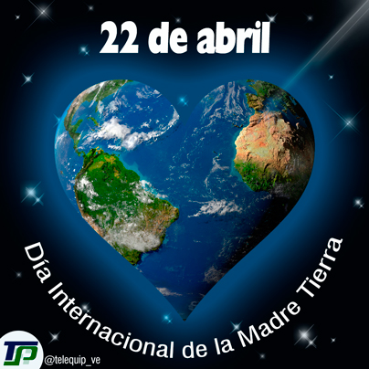

Día Internacional de la Madre Tierra 22 de abril


- 


Realizado por:
De La Cruz Espinosa Miguel Angel
4° "F"
Especialidad
Programación
Submódulo
Desarrollo de aplicaciones Móviles
Docente:
Lic. José Antonio Gómez Hernández
Aplicación 4 Dia Internacional de la Madre Tierra
De La Cruz Espinosa Miguel Angel
¿Por qué se celebra?
Celebramos el Día Internacional de la Madre Tierra para recordar que el planeta y sus ecosistemas nos dan la vidad y el sutetento. Cons este día, asumimos, además, la responsabilidad colectiva, como nos recordaba la Declaración de Río en 1992, de fomentar está armonía con la Naturaleza y la Madre Tierra. Este día nos berinda también la oportunidad de concienciar a todos los habitantes del planeta Tierra acerca de los problemas que afectan a la Tierra y a las diferentes formas de vida que en él se desarrollan.
Aplicación 4 Dia Internacional de la Madre Tierra
De La Cruz Espinosa Miguel Angel
Historia del día
La preocupación explícita por nuestro entorno y, en general, el medio ambiente, se ha popularizado solo en las últimas décadas, en buena medida porque los hábitos y prácticas de nuestra vida cotidiana alcanzaron desde mediados del siglo XX un pico negativo en su efecto sobre la naturaleza y sus procesos. La vida industrializada que en el siglo XIX se volvió ya irreversible, cobró años después la factura ambiental que, también esta, se adivinaba inevitable. Un poco en respuesta a esto, en 1970 se instituyó en Estados Unidos el Día Tierra, un año después de que se registrara un devastador derrame petrolero en las costas de Santa Bárbara, California, con la consecuente protesta de activistas y en especial un senador de la época, Gaylord Nelson, que en compañía de ciudadanos y organizaciones realizó una intensa campaña en pro de la protección del medio ambiente. Casi 20 años después, esta efeméride alcanzó dimensiones mundiales cunado la Organización de las Naciones Unidas (ONU), en el marco de una reunión sostenida en Rio de Janeiro en 1992, instituyó con beneplácito de las más de 100 naciones participantes, el 22 de abril como Día Internacional de la Madre Tierra.
Aplicación 4 Dia Internacional de la Madre Tierra
De La Cruz Espinosa Miguel Angel
La Tierra que habitamos
La Tierra y sus ecosistemas son nuestro hogar. Para alcanzar un justo equilibrio entre las necesidades económicas, sociales y ambientales de las generaciones presentes y futuras, es necesario promover la armonía con la naturaleza y el planeta. Es por eso que celebramos el Día Internacional de la Madre Tierra para recordar que el planeta y sus ecosistemas nos dan la vida y el sustento. Con este día, asumimos, además, la responsabilidad colectiva, como nos recordaba la Declaración de Río de 1992, de fomentar esta armonía con la naturaleza y la Madre Tierra.
Aplicación 4 Día Internacional de la Madre Tierra
De La Cruz Espinosa Miguel Angel
Dialogo sobre Armonía con la Naturaleza
El 23 de abril de 2018 se realizó en la sede de las Naciones Unidas en Nueva York, el 8° Diálogo Interactivo sobre Armonía con la Naturaleza, en ocasión de la conmemoración del Día Internacional de la Madre Tierra. El evento fue convenido por el Presidente de la Asamblea General, Miroslav Lajcak, quien destacó la importancia del Diálogo para intercambiar ideas sobre desarrollo y patrones de producción y consumo sostenibles en armonía con la naturaleza. Durante la jornada, se discutió sobre cómo los marcos legales y económicos de la Jurisprudencia de la Tierra impactan la implementación de patrones de producción y consumo sostenibles en Armonía con la Naturaleza. El Diálogo se realizó con el objetivo de inspirar a los ciudadanos y las sociedades a reconsiderar la relación que mantienen con la naturaleza, acorde a la meta 12.8 de los Objetivos de Desarrollo Sostenible con respecto a los patrones de consumo y producción sostenibles.
Aplicación 4 Dia Internacional de la Madre Tierra
De La Cruz Espinosa Miguel Angel
Hacia una Tierra Sostenible
El paquete de medidas estratégicas diseñado por el quinteto de organizaciones ecologistas está compuesto por 17 demandas que abarcan medidas transversales que trascienden el medioambiente y van más allá con el fin de facilitar la transformación de todo el sistema.
- 1.ª Crear una Vicepresidencia de Sostenibilidad y Ministerio de Medio Ambiente.
- 2.ª Reforzar la Fiscalía Coordinadora de Medio Ambiente y Urbanismo y dotarla de más medios.
- 3.ª Reconocer y reforzar el papel de las organizaciones ambientales.
- 4.ª Establecer una Ley de Fiscalidad Ambiental que redistribuya la carga fiscal primando las buenas prácticas que promuevan el ahorro, la restauración ambiental y la creación de empleo ligado al medio ambiente.
- 5.ª Poner en marcha un plan ambicioso de mejora de la calidad del aire de ámbito estatal.
- 6.ª Prohibir de manera urgente el Bisfenol-A y otros disruptores endocrinos.
- 7.ª Prohibir el uso y abuso de animales con fines lúdicos o publicitarios a través de una Ley de Protección Animal.
- 8.ª Aprobar una Ley de Cambio Climático.
- 9.ª Realizar una auditoría energética de los costes reales del sistema como primer paso para poner en marcha una nueva política energética coherente que impulse el ahorro y la eficiencia energética, la producción descentralizada de energía renovable eliminando las subvenciones a los combustibles fósiles y acometiendo el cierre de las centrales nucleares tras 30 años de funcionamiento.
- 10.ª Aprobar una Ley de Movilidad Sostenible.
- 12.ª Rediseñar una política agroalimentaria respetuosa con el medio ambiente
- 13.ª No dar ni un paso atrás en la política de tolerancia cero contra la pesca ilegal —IUU—.
- 14.ª Apoyar a escala europea una política de Economía Circular ambiciosa que garantice una reducción del uso de recursos naturales por nuestra economía.
- 15.ª Dotar económicamente el Fondo para la Conservación de la Biodiversidad para garantizar el cumplimiento del Plan Estratégico para el Patrimonio Natural.
- 16.ª Derogar la modificación de la Ley de Costas para asegurar la conservación de los ecosistemas costeros amenazados.
- 17.ª Rechazar explícitamente el Tratado Transatlántico de Comercio e Inversiones (TTIP).